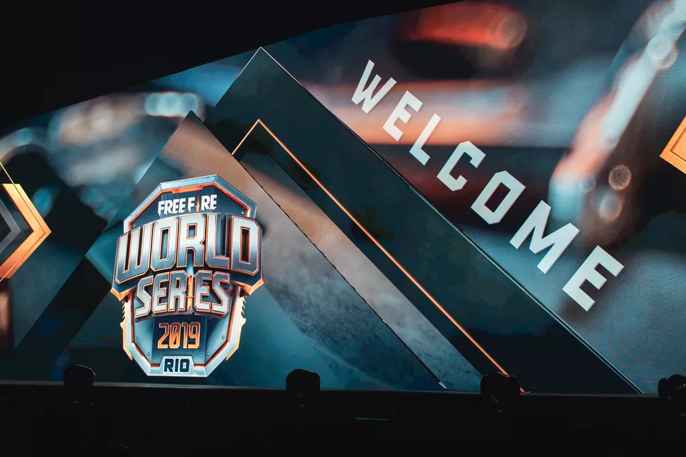

Justin Lye, gerente global de esports da Garena, revelou nesta semana em entrevista ao Esports Insider que o Brasil pode receber mais uma edição do Free Fire World Series (FFWS). Torneio mundial da modalidade, ele foi disputado pela primeira vez no país em 2019. Na edição do Rio de Janeiro, o Corinthians conseguiu conquistar o título da competição.

Até o momento, a Garena não deu detalhes sobre o local da próxima edição do mundial de Free Fire. Entretanto, já se sabe que o evento será realizado em novembro. Próximo da realização do segundo World Series da temporada, a fala do gerente de esports da desenvolvedora dá esperança para os torcedores brasileiros.
– O Brasil tem sido uma comunidade enorme e solidária com o Free Fire. Adoraríamos fazer e levar outro evento para lá algum dia – disse Lye, deixando em aberto a possibilidade de o país poder receber uma nova edição do Free Fire World Series.
Além de dar esperança para os brasileiros terem esperança de que o torneio voltará para o Brasil, Justin também revelou que a Garena está trabalhando com a possibilidade de voltar os eventos com a presença do público. Em decorrência da pandemia do Covid-19, apesar de os eventos acontecerem presencialmente, não há a presença de torcida.
– Torneios presenciais em grande escala são sempre emocionantes de se fazer parte. Então, à medida que as condições atuais diminuem, esperamos receber grandes públicos com segurança novamente – afirmou.